WWDC 2021: Localize your SwiftUI app
Find hereafter a detailed summary of the above named video which belongs to a taxonomy of some WWDC footages.
The original video is available on the official Apple website (session 10220).
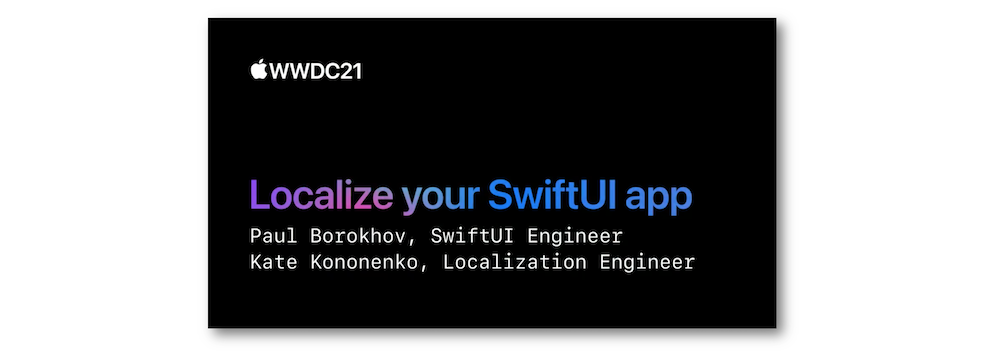
"Learn how to localize your SwiftUI app and make it available to a global audience. Explore how you can localize strings in SwiftUI, including those with styles and formatting. We'll demonstrate how you can save time by having SwiftUI automatically handle tasks such as layout and keyboard shortcuts, and take you through the localization workflow in Xcode 13. To get the most out of this session and learn more about the Markdown language and AttributedString, check out What's new in Foundation from WWDC21."
The various contents of this video are indicated hereunder:
Most of the illustrations are parts of the Apple presentations and may be available at the Resources section inside the Overview sheet of each video.
Hereafter, the underlined elements lead directly to the playback of the WWDC video at the appropriate moment.
Strings #
SwiftUI provides an effortless way to perform localization by natively using this feature inside the Text element describing a string literal...
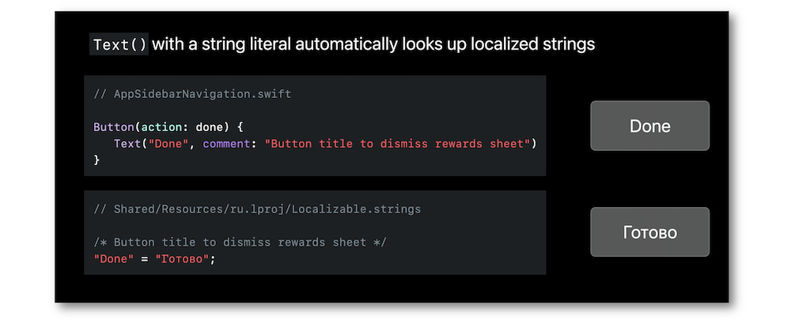
... and regarding string interpolation as well.
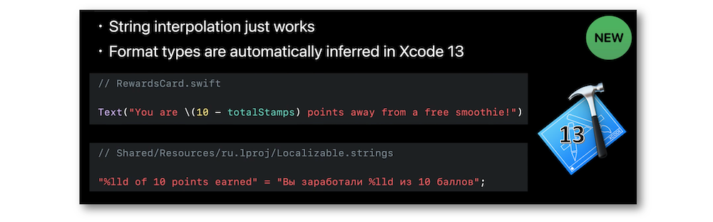
Elements for translation can also be set in different distinct tables in some specific use cases.
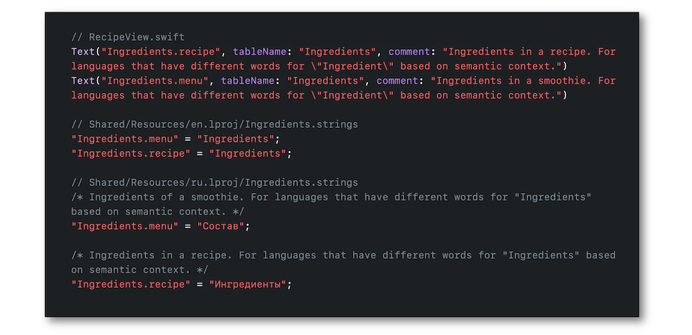
The LocalizedStringKey type is essential to carry out this complete work.
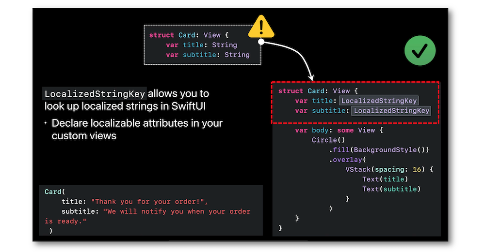
Indicating the locale of the environment in the preview provider may give rise to the visualization of multiple locales at one time if need be: the modification of the language in the is also a way to present all the localized strings.
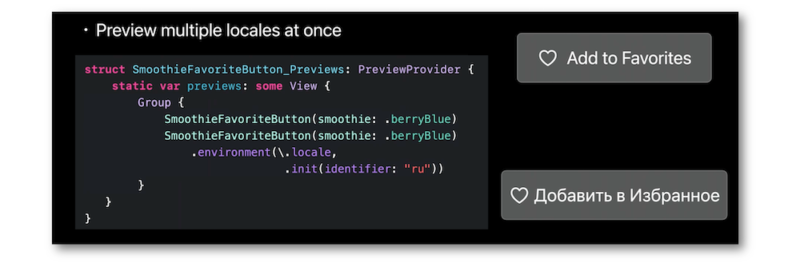
Finding and extracting the appropriate content for localization is now easier than ever to bring about a better multiline string literal parsing for instance.
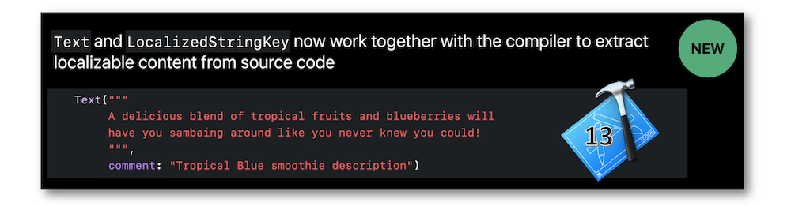
Layout #
SwiftUI layout and localization adjust to provide better default behaviors.
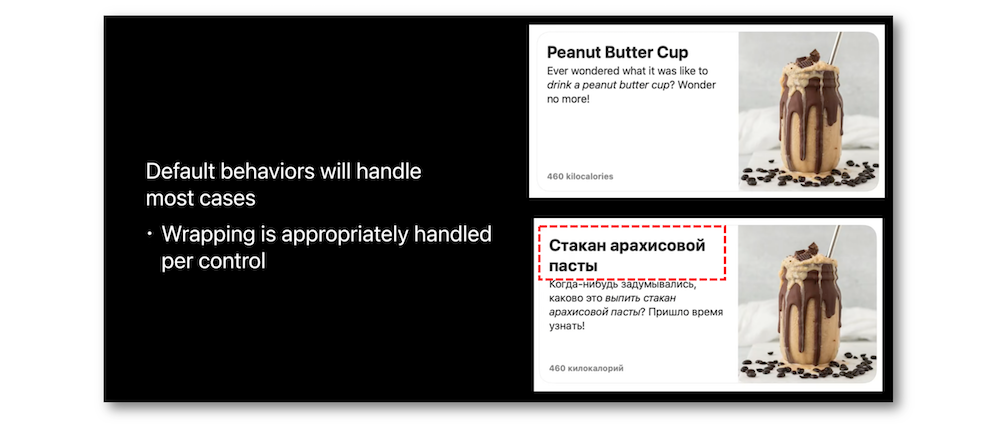
And if any customizations are necessary, it's still possible to implement them in an easy way.
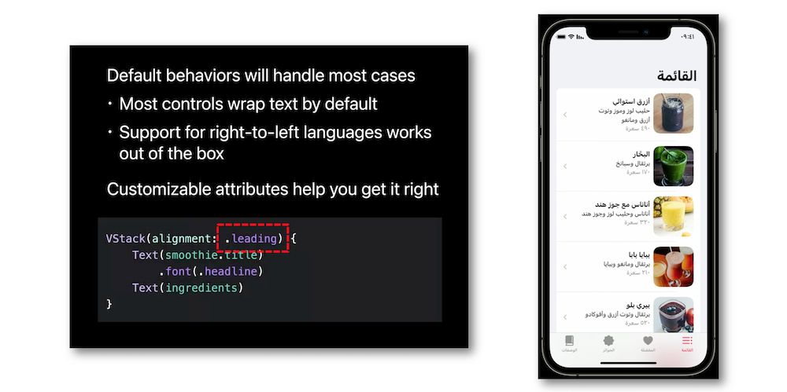
Styling #
The localized strings styling is watered down thanks to the Markdown language.
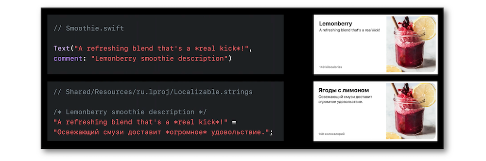
Formatting #
Instead of declaring a dedicated formatter for specific units, it's advisable to apply an inline definition with where the value is used in order to improve the readibility and enhance the code efficiency.
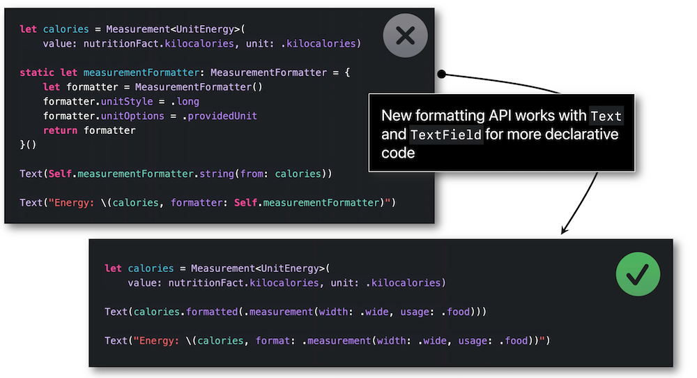
Keyboard shortcuts #
The remapping feature of macOS Monterey and iPadOS 15 enables a universal keyboard layout regardless of the region it is used.
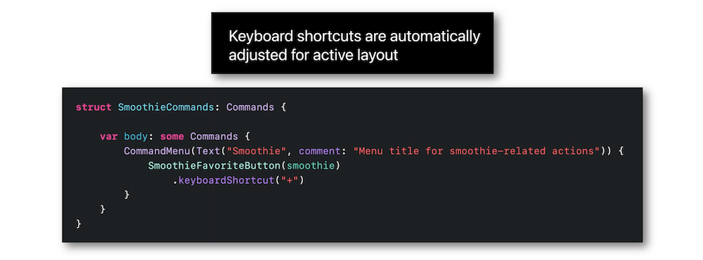
Xcode practice #
This part consists of different scenarii showing the necessary steps to ease and improve the translation for localization using Xcode.
It begins with the addition of the localization in a project to finally achieve a perfect result.
Find hereafter the list of the demo main outlines that highlight the best practice to implement the localization in your app:
-
Check out the localization setting "Use Compiler to Extract Swift Strings".
-
Inspect the strings that should be localized in the SwiftUI Previews.
-
Find out a solution to make a label localizable.
-
Set up the plurals appropriately.
-
Export for localization.
-
Use the Xcode localization catalog.
-
Format strings using various units.
-
Add a comment to a Label item.
-
Add a comment to a TabBar item.
-
Import the changings from an Xcode localization catalog.
-
Adapt the Xcode scheme before running an app in a foreign language.